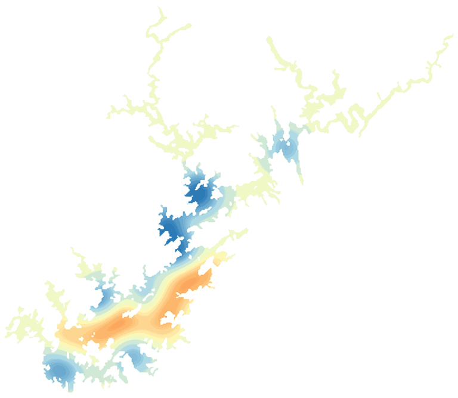

LakeScope › GA
Lake Lanier today
Updated 2026-11-26 - Atlas Labs
Clear water, 54°F water, level falling, 5 ft below normal, windy Thursday (20 mph W).
Water level
1061.76 ft
USGS gauge 02334400 - 2026-11-26
7-day trend: falling (-0.25 ft). Compared with normal for this date: -5.1 ft (same weeks, 2016-2025).
Water clarity and algae
Clear water Last clear view: about a week ago. 2 cloudy passes since.
Surface temperature
54°F
seen from space on 2026-11-23

Weather, next 3 days
| Day | Sky | High / low | Wind | Rain |
|---|---|---|---|---|
| Thursday | Rain Showers Likely | 52 / 39°F | 20 mph W | 74% |
| Friday | Cloudy | 48 / 39°F | 20 mph W | 4% |
| Saturday | Sunny | 57 / 43°F | 10 mph W | 0% |
Sunrise 07:19 - sunset 17:26 - Full moon. National Weather Service.
Get the LakeScope app: alerts and the 3-D view of Lake Lanier